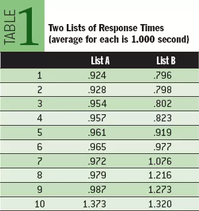

假如你去 Google 下 Performance 这个关键字，可能会得到 5 亿个链接。 其中涉及的内容范围可能从自行车比赛到可怕的员工审查流程（如今很多公司已经学会了避免这个流程）。但假如我去 Google 下 Performance 这个关键字，大部分的首页链接都会与这篇文章的主题有关：计算机软件执行无论何种任务所花费的时间。
任务这个词是一个很适合的开始。任务是一个面向业务的工作单元。任务能够嵌套：打印发货单是一个任务，打印一张发货单（一个子任务）也是一个任务。当一个用户说起性能时，他通常指的是系统执行一系列任务所花费的时间。响应时间 是任务的执行时长，用每个任务的时间来度量，像每点击秒数。例如我用 Google 搜索关键字 Performance 的响应时间是 0.24 秒。 这个数据来自我的浏览器它渲染完 Google 网页花费的时间，那么很明显，这量化了我对 Google 性能的直觉感知。
一些人对另外一个性能指标很感兴趣：吞吐量。 吞吐量 是在一个特定时间段内完成的任务的计数，例如：每秒点击数。通常为一群人提供服务比为个别人提供服务的人更关心吞吐量。例如，一个独立会计会更关心日报的响应时间是否会导致今晚需要加班，而会计部的经理更关心系统的是否能支撑所有的会计处理完今天的数据。
通常来讲，响应时间和吞吐量是一个倒数关系（响应时间越长吞吐量越低），但这并不确切。 实际情况更微妙、复杂一些。
例 1
假如，在一些性能基准测试中，你的系统的测量结果是每秒能处理 1000 个任务，那么用户的平均响应时间是多少？ 你可能会说平均响应时间等于 1 / 1000 = 0.001 秒/每任务，但它真不是这样的。
假如在你的系统内部拥有 1000 个相同的、独立的、并行的服务执行通道，每个通道都在等待请求到来并提供服务。 在这种情况下，每个请求其实花费了 1 秒。
现在我们知道，平均响应时间其实应该在每任务 0 秒到 1 秒之间。 但是我们不能仅仅从吞吐量的测量数据中推导出平均响应时间。（事实上存在数学模型从吞吐量推导出平均响应时间，但这个模型要求更多的输入参数，而不仅仅是吞吐量） 你必须单独测量它。
反过来说也是一样的，你应该能从我上面给出的例子中得到启发。 下面是一个更有趣的例子。
例 2
你的客户要求一个新任务必须满足在单核 CPU 的计算机上达到每秒 100 的吞吐量。 假如这个新任务在客户的系统上执行一次需要 0.001 秒。 那么你的程序能够满足客户要求的吞吐量么？
你可能会说，跑一次这个任务只需要千分之一秒，那么在一秒内完成 100 次显然是绰绰有余的。 恩，是的，你很正确，假如这个任务被很好的串行化了。 例如，你的程序处理 100 个任务执行请求是在一个循环中，一个接一个的执行，那就是正确的。
但是如果这 100 个任务到达你的系统是完全随机的来自 100 个不同的用户，那该怎么办呢？CPU 调度器和串行资源（Oracle 的闩和锁，内存可写缓冲区访问）这些糟糕的实际情况会严格限制你的并发吞吐量低于每秒 100。 最终，你可能会达到客户的期望也可能达不到。 你不能仅仅从响应时间推导出吞吐量，你必须单独测量吞吐量。
所以，响应时间和吞吐量不是那么简单的互为倒数关系。 你想要知道这两个指标，就必须一起测量它们。那么响应时间和吞吐量到底哪一个更重要呢？ 在一些场景下，说哪一个都是合理的。 但在大多数情况下，两者都同样重要。 因为，对系统来说它的业务需求通常是这样的，在大于 99％ 的情况下响应时间要少于 1 秒，并且能支持 10 分钟内持续不低于 1000 的吞吐量。
在上一节，我用了“大于 99％”这样的描述来表达对响应时间的期望。 但大部分人可能更习惯于这样的描述：“平均响应时间少于 r 秒”。 但从经验的角度，使用百分比方式更好。
例 3
假想每天运行在你的计算机上的任务的响应时间的容忍极限是 1 秒。进一步假设「表1」列出了该任务执行 10 次的测量值。 这两个列表的平均响应时间都是 1 秒。哪一个你认为更好？

虽然你看到两个列表拥有同样的平均响应时间，但本质上差别很大。ListA 90％ 的响应时间是低于 1 秒的，而 ListB 只有 60％ 的时间是低于 1 秒的。从用户体验的角度来说，ListB 表明会有 40％ 的用户会感到不满意，而 ListA 仅有 10％ 的不满意率，虽然它们平均响应时间相同。
ListA 90％ 的响应时间是 0.987 秒，而 ListB 90％ 的响应时间是 1.273 秒。 因此使用百分比描述的响应时间比平均响应时间包含更多的信息量。
正如 GE 公司所说：“客户感受到的是差异变化，而非平均”。（参见GE的《什么是六西格玛》） 可见使用百分比来描述响应时间更符合终端用户的期望：例如，99.9% 的跟踪货运单的任务必须在 0.5 秒内完成。
[1] https://segmentfault.com/a/1190000006662314?utm\_source=weekly&utm\_medium=email&utm\_campaign=email\_weekly: https://segmentfault.com/a/1190000006662314?utm_source=weekly&utm_medium=email&utm_campaign=email_weekly